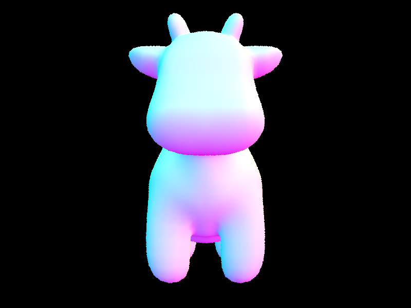
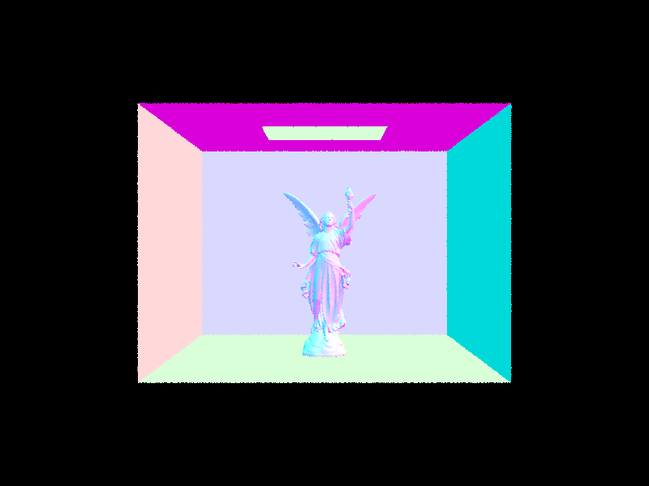
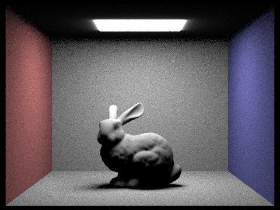
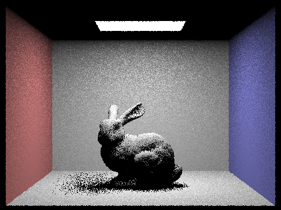
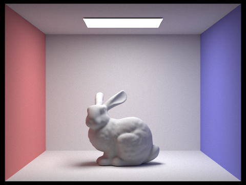
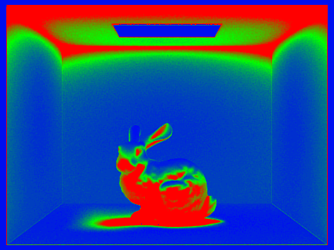
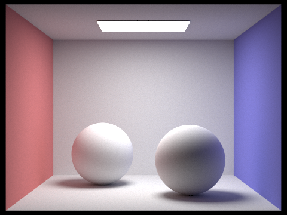
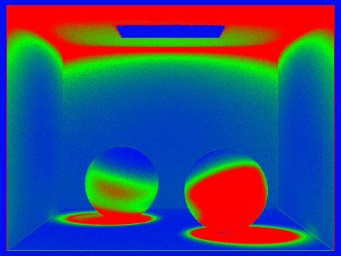

Overview
This write-up follows a CPU path tracer from jittered camera rays and Möller–Trumbore triangle intersection—checked with normal-shading previews on small .dae scenes—through a BVH built with longest-axis centroid splits and slab bbox tests, where timing tables show the payoff on larger models. Direct lighting comes next, comparing uniform hemisphere sampling with importance sampling over lights and how the number of light rays affects soft-shadow noise. It closes with adaptive sampling in raytrace_pixel: batched variance estimates, a confidence-interval stopping rule, and rate images that show where extra samples were still needed next to the final bunny and spheres renders.
Ray Generation and Scene Intersection
Walk through the ray generation and primitive intersection parts of the rendering pipeline.
Ray Generation (camera.cpp / pathtracer.cpp)
For each pixel \((x, y)\), we generate ns_aa jittered samples using a uniform grid sampler. Each sample is offset within the pixel and normalized to \([0,1]^2\) before being passed to Camera::generate_ray.
Inside generate_ray, the normalized image coordinate \((x, y)\) is mapped to a point on the virtual sensor in camera space, which sits on the \(Z = -1\) plane. The sensor spans:
So the camera-space sensor point is:
\[ p_\text{cam} = \left((2x-1)\tan\!\tfrac{\text{hFov}}{2},\ (2y-1)\tan\!\tfrac{\text{vFov}}{2},\ -1\right) \]This direction is rotated into world space via the camera-to-world matrix \(c2w\) and normalized. The resulting ray originates at pos with min_t = nClip, max_t = fClip.
Back in raytrace_pixel, the radiance estimates from all samples are averaged and written to sampleBuffer.
Primitive Intersection
Each ray is tested against the scene's primitives (triangles, spheres). Intersections are only valid in \([t_\text{min}, t_\text{max}]\). When a closer hit is found, ray.max_t is tightened so subsequent tests can early-exit. The closest intersection fills an Intersection struct with \(t\), surface normal, primitive pointer, and BSDF.
Explain the triangle intersection algorithm you implemented in your own words.
The implementation uses the Möller–Trumbore algorithm, which solves the ray–triangle intersection directly in barycentric coordinates without explicitly computing the plane equation.
Given a ray \(\mathbf{r}(t) = \mathbf{o} + t\mathbf{d}\) and triangle vertices \(P_1, P_2, P_3\), define edge vectors:
\[ \mathbf{e}_1 = P_2 - P_1, \quad \mathbf{e}_2 = P_3 - P_1 \]We solve the system \(\mathbf{o} + t\mathbf{d} = (1-u-v)P_1 + uP_2 + vP_3\) via Cramer's rule:
\[ \begin{pmatrix} t \\ u \\ v \end{pmatrix} = \frac{1}{\mathbf{e}_1 \cdot \mathbf{h}} \begin{pmatrix} \mathbf{e}_2 \cdot \mathbf{q} \\ \mathbf{s} \cdot \mathbf{h} \\ \mathbf{d} \cdot \mathbf{q} \end{pmatrix} \]where \(\mathbf{h} = \mathbf{d} \times \mathbf{e}_2\), \(\mathbf{s} = \mathbf{o} - P_1\), \(\mathbf{q} = \mathbf{s} \times \mathbf{e}_1\).
The intersection is valid if \(u \in [0,1]\), \(v \in [0,1]\), \(u+v \le 1\), and \(t \in [t_\text{min}, t_\text{max}]\). The surface normal is interpolated from the vertex normals using the barycentric weights \((1-u-v, u, v)\):
\[ \mathbf{n} = \operatorname{normalize}\!\left((1-u-v)\,\mathbf{n}_1 + u\,\mathbf{n}_2 + v\,\mathbf{n}_3\right) \]Images with Normal Shading
Below are a few small .dae files rendered with normal shading (each RGB channel encodes the surface normal direction).

CBempty.dae
CBspheres_lambertian.dae
banana.dae
cow.daeBounding Volume Hierarchy
Walk through your BVH construction algorithm and explain the heuristic you chose for picking the splitting point.
Construction (bvh.cpp — BVHAccel::construct_bvh)
- Compute the bounding box over all primitives in \([\text{start}, \text{end})\).
- If the primitive count \(n \le \text{max\_leaf\_size}\), create a leaf node and return.
- Otherwise, pick the longest axis of the bounding box extent: \[ \text{axis} = \arg\max_{k \in \{x,y,z\}} \text{extent}_k \]
- Set the split threshold to the centroid of the bounding box along that axis (spatial median): \[ \text{split} = \text{bbox.centroid}()[\text{axis}] \]
- Partition primitives so that those whose own centroid is \(\lt \text{split}\) go left, the rest go right.
- Degenerate case: if all primitives end up on one side (e.g., many coincident centroids), force a median split at \(n/2\) to prevent infinite recursion.
- Recurse on the two halves to build
node->landnode->r.
Why longest-axis centroid split?
Splitting along the longest axis keeps the two child boxes as compact as possible, reducing overlap and wasted traversal. The centroid threshold is a simple \(O(n)\) partition with no extra memory, and the median fallback ensures the tree always terminates.
BBox intersection (bbox.cpp — BBox::intersect)
Uses the slab method: for each axis, compute the ray's entry and exit \(t\) against the axis-aligned planes using precomputed r.inv_d. Then:
The ray hits the box iff \(t_\text{near} \le t_\text{far}\) and \([t_\text{near}, t_\text{far}]\) overlaps the ray's valid interval.
BVH traversal (bvh.cpp — BVHAccel::has_intersection / intersect)
Both functions start by testing the ray against node->bb; if it misses, they return immediately. At a leaf, all contained primitives are tested. At an interior node, both children are recursed.
has_intersectionshort-circuits: returnstrueas soon as any primitive is hit.intersectalways checks both children so it can find the closest hit (ray'smax_tis progressively tightened by primitive hits, so the far child is still skipped if its bbox miss is beyondmax_t).
Images with Normal Shading for Large .dae Files
These scenes are impractical to render without BVH — they range from 50K to 133K primitives.

maxplanck.dae (50,801 primitives)
CBlucy.dae (133,796 primitives)
peter.dae
beast.daeRendering Time Comparison: With vs. Without BVH
All timings: 800×600, -s 1, -t 8 (8 threads), normal shading. Brute-force traversal tests every primitive per ray; BVH traversal prunes subtrees via bbox tests.
| Scene | Primitives | Without BVH (s) | With BVH (s) | Speedup |
|---|---|---|---|---|
teapot.dae |
2,464 | 0.84 | 0.04 | ~19x |
cow.dae |
5,856 | 2.38 | 0.03 | ~73x |
maxplanck.dae |
50,801 | 21.35 | 0.04 | ~493x |
CBlucy.dae |
133,796 | 127.48 | 0.06 | ~2111x |
BVH reduces intersection tests from \(O(n)\) per ray to \(O(\log n)\) on average. The speedup scales roughly linearly with primitive count: teapot sees ~19x while CBlucy (54x more primitives) sees ~2100x. Without BVH, each ray must test all primitives regardless of geometry; with BVH, the hierarchy prunes entire subtrees whenever a ray misses a bounding box, keeping traversal cost nearly constant even as scene complexity grows.
Direct Illumination
Walk through both implementations of the direct lighting function.
Uniform Hemisphere Sampling (estimate_direct_lighting_hemisphere)
For each hit point, we draw num_samples directions uniformly from the hemisphere in object space using hemisphereSampler->get_sample(). Each sampled direction is transformed to world space and used to cast a shadow ray from hit_p (with min_t = EPS_F to avoid self-intersection). If that ray hits a surface that emits light (get_emission().norm() > 0), we accumulate the Monte Carlo contribution using the reflection equation:
where \(p(\mathbf{w}_\text{in}) = \frac{1}{2\pi}\) for a uniform hemisphere, so the term simplifies to \(\times 2\pi\). The sum is divided by num_samples at the end.
Importance Sampling Lights (estimate_direct_lighting_importance)
Instead of sampling random directions, we iterate over every light in the scene. For each light we draw ns_area_light samples (or just 1 for delta/point lights, since all samples would be identical). For each sample, light->sample_L(hit_p, &wi, &distToLight, &pdf) gives us the incoming radiance \(L_i\), the world-space direction \(\mathbf{w}_i\) toward the light, the distance, and the PDF.
We convert \(\mathbf{w}_i\) to object space to compute \(\cos\theta = w_{i,z}\) and skip it if \(\cos\theta \le 0\) (light behind the surface). We then cast a shadow ray with max_t = distToLight - EPS_F; if it is unoccluded, we accumulate:
Each light's contribution is averaged over its num_light_samples before being added to the total.
Both Implementations Rendered
CBbunny.dae at 480×360, -s 64 -l 32 -m 6 -t 8

-H)Noise Levels vs. Light Rays (-l) — Importance Sampling
CBbunny.dae at 480×360, -s 1 -m 1 -t 8, importance sampling only.

With only 1 light ray the soft shadow boundary is extremely noisy — each pixel's shadow estimate is a single binary hit/miss. At 4 rays the shadow region is recognizable but still grainy. At 16 rays soft shadows become smooth with mild residual noise, and at 64 rays the penumbra is nearly clean.
Uniform Hemisphere vs. Importance Sampling — Comparison
At the same sample budget (64 samples per pixel, 32 per light), importance sampling produces a noticeably cleaner image than uniform hemisphere sampling. Hemisphere sampling wastes most samples on directions that never reach the light, so only a small fraction contribute non-zero radiance — this translates to high variance and visible noise even at 64 spp. Importance sampling avoids this entirely: every shadow ray is cast directly toward a light source, so nearly every sample is useful. The result is much lower variance per sample, meaning importance sampling converges to the correct image faster and requires fewer samples to achieve the same quality. The trade-off is that importance sampling requires iterating over all scene lights explicitly, but for typical scenes with a small number of lights this is far more efficient than hoping a random hemisphere direction finds one.
Adaptive Sampling
Overview
Monte Carlo path tracing converges at different rates for different pixels. Simple areas (e.g. flat walls directly lit) need few samples to converge, while complex areas (e.g. caustics, sharp shadow boundaries, surfaces with high-frequency illumination variation) need many. Adaptive sampling concentrates samples where they're needed, reducing total render time without sacrificing quality.
Implementation
The algorithm runs inside raytrace_pixel in pathtracer.cpp. For each pixel, instead of always taking exactly ns_aa samples, it traces samples in batches of samplesPerBatch (default 32), tracking two running statistics:
where \(x_k = L_k.\text{illum()}\) is the illuminance of the \(k\)-th sample.
After each batch, it computes the sample mean and variance:
\[ \mu = \frac{s_1}{n}, \quad \sigma^2 = \frac{1}{n-1}\left(s_2 - \frac{s_1^2}{n}\right) \]Then the 95% confidence interval half-width:
\[ I = 1.96 \cdot \frac{\sigma}{\sqrt{n}} \]If \(I \leq \texttt{maxTolerance} \cdot \mu\) (default maxTolerance=0.05), the pixel has converged and sampling stops early. Otherwise it continues up to the maximum ns_aa samples. The actual sample count is written to sampleCountBuffer for the rate image.
double s1 = 0.0, s2 = 0.0;
int actual_samples = 0;
for (int i = 0; i < num_samples; i++) {
Vector3D L = est_radiance_global_illumination(r);
double xk = L.illum();
s1 += xk; s2 += xk * xk;
actual_samples++;
if (actual_samples % samplesPerBatch == 0) {
double mu = s1 / actual_samples;
double sigma2 = (s2 - s1*s1/actual_samples) / (actual_samples - 1);
double I = 1.96 * sqrt(sigma2 / actual_samples);
if (I <= maxTolerance * mu) break;
}
}
sampleCountBuffer[x + y * sampleBuffer.w] = actual_samples;Results
Rendered with -s 2048 -a 64 0.05 -l 1 -m 5 -r 480 360.
The rate image maps blue → low samples, red → high samples (relative to max 2048).
CBbunny


CBspheres_lambertian


The rate images show clearly that smooth, uniformly lit regions (flat walls, open ceiling away from the light) converge quickly and appear blue — only a small fraction of 2048 samples are needed. Edges, shadow boundaries, and the surface of the bunny/spheres where indirect lighting varies require more samples and appear green/red. The area light itself converges almost instantly (it always returns the same emission value). This pattern confirms that adaptive sampling efficiently allocates work where variance is high.